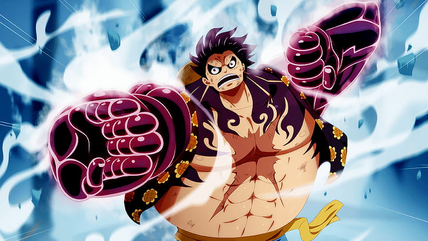

Dressrosa
Luffy despertar do Gear 4

O Arco Dressrosa é o vigésimo sétimo arco da história da série e a
segunda na Saga Aliança Pirata de One Piece, continuando a partir do
Arco Punk Hazard. Os Chapéus de Palha, Trafalgar Law, e Kin'emon,
tendo formado uma aliança, viajam para Dressrosa como parte de seu
plano. Dressrosa é a segunda ilha do encontro Chapéus de palha no Novo
Mundo e é governado pelo Shichibukai, Donquixote Doflamingo.